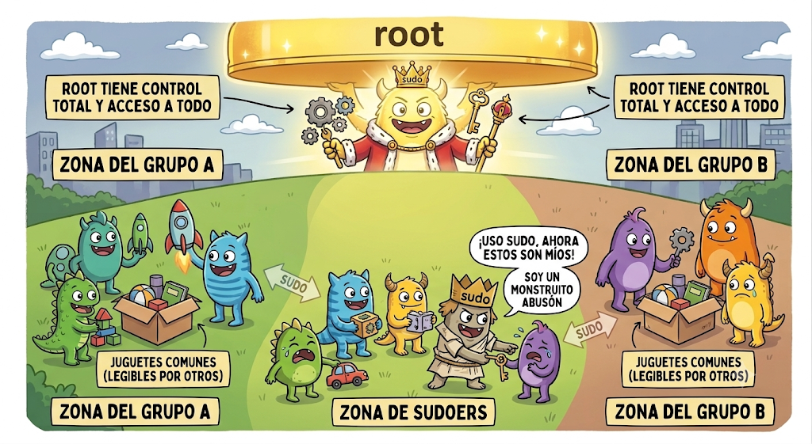

Manejando un servidor Linux
1 Gestión de Usuarios:
En Linux, la seguridad se basa en la separación de privilegios. No todos los usuarios son iguales, y esto es lo que evita que un error humano o un programa malintencionado destruya el sistema operativo.
1.1 Las tres clases de usuarios en Linux
1.1.1 root (El Rey):
UID 0. Poder total. Es el único que puede hacer cambios estructurales en el sistema.
1.1.2 Usuarios Humanos:
Creados para que tú (o tus compañeros) interactúen con el sistema. Tienen un home asignado y permisos para ejecutar aplicaciones de escritorio, programar, etc. Tendrán permisos sobre su carpeta /home/nombre_usuario y también tendrán permisos basados en los grupos a los que pertenezcan.
1.1.2.1 Configuración por defecto: La regla del “Grupo Privado”
Cuando creas un usuario nuevo (adduser), Linux aplica una filosofía llamada UPG (User Private Group):
¿Qué hace?: Crea automáticamente un grupo con el mismo nombre que el usuario y añade a ese usuario como único miembro de ese grupo.
¿Por qué?: Esto permite que cada usuario tenga una carpeta privada donde, por defecto, solo él puede leer y escribir. Si quieres compartir archivos, entonces creas grupos comunes y añades a varios usuarios a ese grupo compartido.
El Usuario Inicial (Tu “Administrador Humano”): Cuando instalas Linux, el sistema te obliga a crear un usuario. Este usuario es especial:
Es un usuario estándar: Tiene su propio directorio
/home/usuario.Es un “sudoer”: El instalador lo añade al grupo
sudo(owheel). Esto le otorga la capacidad de “tomar prestado” el poder derootmediante el comandosudo.
Comparativa: root vs. Usuario Inicial
| Característica | Usuario Inicial (Tú) | Usuario root |
|---|---|---|
| Identificador (UID) | > 0 (normalmente 1000) | 0 |
| Privilegios | Limitados a su home | Totales y absolutos |
| Uso recomendado | Diario (programación, admin) | Solo tareas de mantenimiento |
| Seguridad | Alta (protege de errores) | Baja (riesgo de rotura total) |
Tu usuario no “es” root, pero tiene permiso para ejecutar cosas como root.
La magia de
sudo: El sistema comprueba en/etc/sudoerssi estás en el gruposudo. Si es así, te presta el poder derootsolo durante el tiempo que dura ese comando.Privilegios temporales: En cuanto el comando termina, vuelves a ser un usuario normal.
Regla de oro: Si puedes hacer algo con tu usuario normal, hazlo. Si necesitas hacer una tarea de sistema (instalar software, editar configuraciones de red), usa sudo. Nunca te loguees directamente como root para trabajar.

1.1.3 Usuarios de Sistema o Servicio:
Son los “fantasmas” del sistema. No son humanos. Corren procesos como servidores web (Apache/Nginx), bases de datos (MySQL/PostgreSQL) o tareas de red.
- Características: No tienen contraseña de login, no tienen un
homereal (o es limitado) y, lo más importante, su shell (intérprete de comandos) está bloqueado (/usr/sbin/nologin). Esto evita que un hacker pueda “entrar” usando la cuenta de una base de datos para tomar el control.
2 Estructura básica del sistema de archivos en Linux
2.1 Directorios principales y su propósito
/ Raíz del sistema de archivos. Desde aquí cuelga todo: es el “punto de partida”.
/home Directorios personales de los usuarios humanos. Cada usuario tiene su carpeta:
/home/pepita,/home/juan, etc. Aquí sí puedes trabajar y guardar tus cosas./root Directorio personal del usuario
root(administrador). No es lo mismo que/. No deberías usarlo salvo que sepas muy bien lo que haces./etc Configuración del sistema y de servicios. Aquí viven archivos como
sshd_config,fstab,sudoers, etc. Crítico para el sistema: tocar con cuidado, siempre con copia de seguridad./var Datos “variables”: logs, colas, cachés, archivos temporales de servicios. Ejemplos:
/var/log,/var/spool,/var/lib. Importante para servicios y diagnósticos (logs)./usr Programas y librerías instalados en el sistema. Subdirectorios típicos:
/usr/bin,/usr/sbin,/usr/lib. No es para tus archivos personales./opt Software adicional, normalmente aplicaciones de terceros. Muchas herramientas se instalan aquí fuera del sistema base. Útil para saber dónde está instalado cierto software.
/tmp Archivos temporales. Se pueden borrar y a veces se vacía al reiniciar. Nunca guardes aquí nada importante.
3 Comandos básicos de Linux
3.1 Terminología de Terminal
Prompt: La virguriña
~indica que estamos en el directoriohome.El símbolo
$indica usuario normal,mientras que
#indica usuarioroot.
sudo (superuser do): Ejecuta comandos con privilegios elevados. Se requiere pertenecer al grupo
sudo.- Ejemplo:
sudo apt install nombre_paquete
- Ejemplo:
su (switch user): Permite cambiar de usuario (hacer un “salto”) para trabajar con sus privilegios.
clear: Limpia la pantalla de la terminal para tener un prompt limpio.
man (manual): Sirve para conseguir información sobre un comando linux, sus parámetros y opciones. Ejemplo
man useraddpulsaqpara salirVer la versión del sistema operativo
cat /etc/os-release
Ver información general del equipo:
hostnamectlMuestra información del equipo, como nombre del host, sistema operativo, kernel, arquitectura y tipo de máquina.
Ver versión del kernel
uname -anombre del kernel, versión, arquitectura y fecha de compilación. l
lVer CPU y número de procesadores lógicos:
lscpumuestra información de la cpu
nprocdevuelve el numero de procesadores lógicos
3.3 Gestión de Usuarios y Grupos
3.3.1 Usuarios
Añadir:
sudo adduser nombre_usuarioEliminar:
sudo deluser nombre_usuarioCambiar contraseña:
passwd nombre_usuarioVer todos:
cat /etc/passwd
3.3.2 Grupos
Añadir:
sudo addgroup nombre_grupoEliminar:
sudo delgroup nombre_grupoAñadir usuario a grupo:
usermod (modify user):
sudo usermod -aG nombre_grupo nombre_usuario.-aGsignifica Append (añadir) a un grupo.
La opción-a(append) es crítica. Si olvidas ponerla y solo escribesusermod -G nombre_grupo nombre_usuario, Linux borrará al usuario de todos sus grupos anteriores y solo lo dejará en el nuevo grupo. ¡Podrías dejar al usuario sin acceso a sus archivos personales o dispositivosadduser (add user):
sudo adduser nombre_usuario nombre_grupoEs una forma amigable de usar el comando usermod con menos riesgos ya que por defecto sólo añade el usuario a un nuevo grupo sin borrarlo del resto, pero no esta disponible en todas las distribuciones linux. Está diseñado para ser más seguro y fácil de recordar.
Eliminar usuario de grupo:
sudo deluser nombre_usuario nombre_grupoVer todos:
cat /etc/groupVer grupos de un usuario:
groups nombre_usuario
3.4 Permisos y Propietarios
3.4.1 Cambiar Propietario
Usuario:
sudo chown nuevo_usuario archivoGrupo:
sudo chgrp nuevo_grupo archivo
3.4.2 Permisos (chmod)
El comando chmod cambia los privilegios. Puedes usarlo de dos formas:
3.4.2.1 Modo Numérico (Octal)
| Valor (Octal) | Permisos | Descripción |
|---|---|---|
| 0 | --- |
Ningún permiso |
| 1 | --x |
Ejecución |
| 2 | -w- |
Escritura |
| 3 | -wx |
Escritura + Ejecución |
| 4 | r-- |
Lectura |
| 5 | r-x |
Lectura + Ejecución |
| 6 | rw- |
Lectura + Escritura |
| 7 | rwx |
Lectura + Escritura + Ejecución |
Es la forma más rápida. Se basa en sumar valores: Lectura (r)=4, Escritura (w)=2, Ejecución (x)=1. El comando recibe 3 dígitos (Usuario, Grupo, Otros).
Ejemplo
764:Usuario (7): 4+2+1 = Lectura, Escritura y Ejecución.
Grupo (6): 4+2+0 = Lectura y Escritura.
Otros (4): 4+0+0 = Solo Lectura.
3.4.2.2 Modo Texto (Simbólico)
Es más intuitivo para añadir/quitar permisos específicos.
Sintaxis:
sudo chmod [quién][operador][qué] archivoQuién:
u(usuario),g(grupo),o(otros),a(todos).Operador:
=(asignar),+(añadir),-(quitar).Qué:
r(lectura),w(escritura),x(ejecución).
Ejemplo:
sudo chmod u+x archivo(Añade ejecución al usuario).
Nota sobre múltiples grupos y ACLs: Linux no permite asignar múltiples grupos primarios a un archivo, pero puedes usar ACLs para mayor flexibilidad.
Ejemplo:
setfacl -m g:grupo_extra:r archivo.txt(da permiso de lectura a un grupo extra).Ver permisos ACL:
getfacl archivo.txt.
3.5 Fecha y Hora (Timedatectl)
Ver estado:
timedatectlDesactivar sincronización NTP:
sudo timedatectl set-ntp falseCambiar hora manualmente:
sudo timedatectl set-time "AAAA-MM-DD HH:MM:SS"Activar sincronización NTP:
sudo timedatectl set-ntp true
4 Guía: Interpretación de ls -l y Permisos en Linux
Cuando ejecutas el comando ls -l, el sistema te devuelve una lista detallada. La primera parte de esa línea es fundamental para entender qué es el archivo y quién puede hacer qué con él.
Una línea típica se ve así: -rwxr-xr-- 1 root root 4096 Jun 26 19:50 archivo.txt
Desglose campo a campo:
Tipo de archivo y Permisos:
-rwxr-xr--(Explicado en detalle abajo).Enlaces:
1(Número de enlaces físicos al archivo/directorio).Propietario:
root(Usuario que posee el archivo).Grupo:
root(Grupo que tiene permisos sobre el archivo).Tamaño:
4096(Tamaño en bytes).Fecha de modificación:
Jun 26 19:50(Última vez que se modificó).Nombre:
archivo.txt(Nombre del archivo).
4.0.0.1 El bloque de permisos (El primer campo)
El primer carácter indica el tipo de archivo:
-: Archivo estándar (documentos, imágenes, scripts).d: Directorio (carpeta).l: Enlace simbólico (un acceso directo).
Los siguientes 9 caracteres se dividen en 3 bloques de 3 bits cada uno:
Bloque 1: Usuario Propietario (u): Define qué puede hacer el creador o dueño del archivo.
Bloque 2: Grupo Propietario (g): Define qué pueden hacer los usuarios que pertenecen al grupo asignado al archivo.
Bloque 3: Otros Usuarios (o): Define qué puede hacer cualquier otro usuario del sistema (el “resto del mundo”).
4.0.0.2 Significado de los caracteres (r, w, x)
En Archivos normales (-):
r(Read): Permite leer el contenido del archivo (ej.cat,less).w(Write): Permite modificar, renombrar o borrar el contenido del archivo.x(Execute): Permite ejecutarlo si es un programa o script (ej../script.sh).-: Permiso revocado/inexistente.
En Directorios (d):
r(Read): Permite listar el contenido del directorio (ver los nombres de los archivos dentro conls).w(Write): Permite crear, borrar o mover archivos dentro del directorio.x(Execute): Permite entrar en el directorio (usarcdpara navegar dentro).
Resumen de interpretación rápida
| Carácter | Función en Archivo | Función en Directorio |
|---|---|---|
| r | Ver el contenido (lectura) | Listar archivos (ls) |
| w | Modificar/borrar contenido | Crear/borrar archivos internos |
| x | Ejecutar como programa | Entrar en la carpeta (cd) |
Ejemplo práctico: -rwxr-xr--
Propietario: Tiene todos los permisos (
rwx).Grupo: Puede leer y ejecutar, pero no modificar (
r-x).Otros: Solo pueden leer el archivo (
r--).
Linux no permite asignar múltiples grupos directamente a un archivo. Pero sí puedes lograrlo de varias formas:
Opción 1: Cambiar el grupo del archivo chgrp desarrolladores archivo.txt para asignar el grupo “desarrolladores” al archivo “archivo.txt”. Luego, puedes agregar usuarios al grupo “desarrolladores” usando sudo usermod -aG desarrolladores usuario.
Opción 2: Usar ACLs (Access Control Lists) Esto es lo moderno y flexible: puedes dar permisos a varios grupos o usuarios adicionales. Ejemplo: dar permisos de lectura a un grupo extra: setfacl -m g:grupo_extra:r archivo.txt. Para ver los permisos ACL de un archivo, puedes usar getfacl archivo.txt.